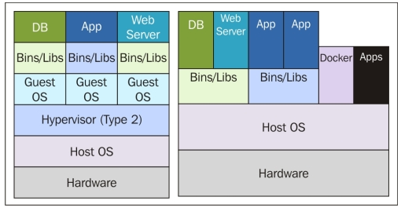

Virtualization vs. Containerization
The main difference between the two is that containerization functions to run multiple workloads with one OS instance while virtualization uses the hardware to run multiple OS instances. Containerization is lighter, faster, and more wieldly compared to virtualization, but virtualization is still incredibly useful. Virtualization is important when you need the full use of an OS or use multiple applications on a server. Containers are best for shorter lifecycle tasks.